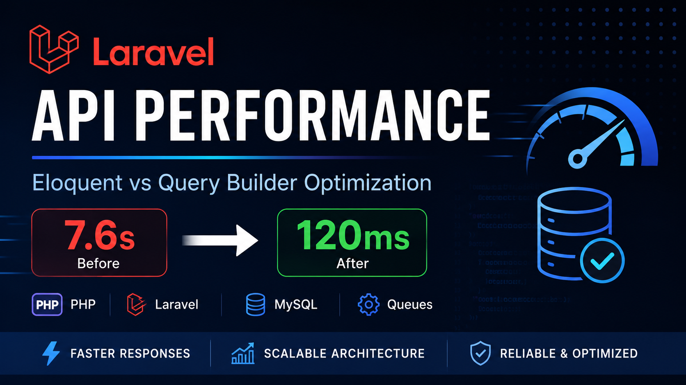
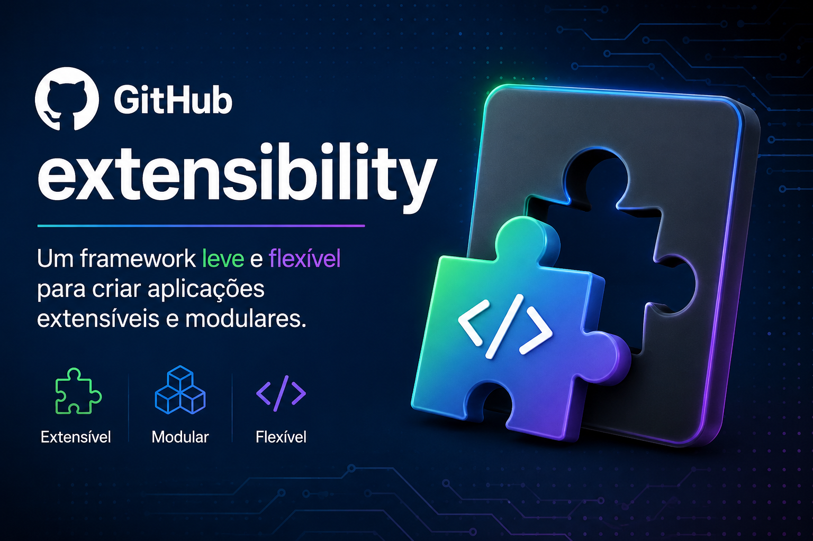
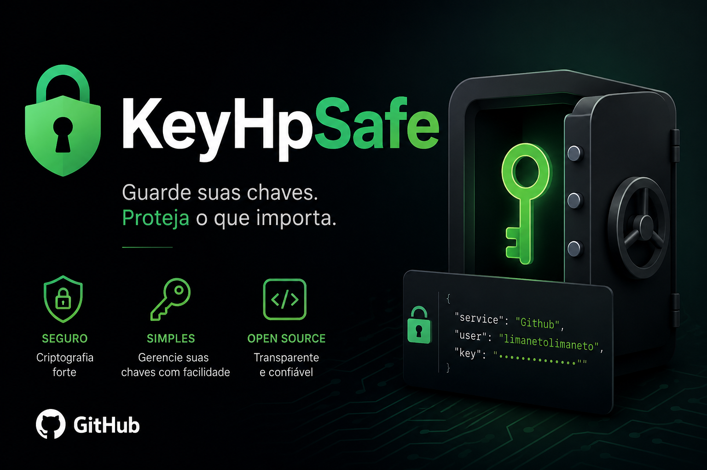
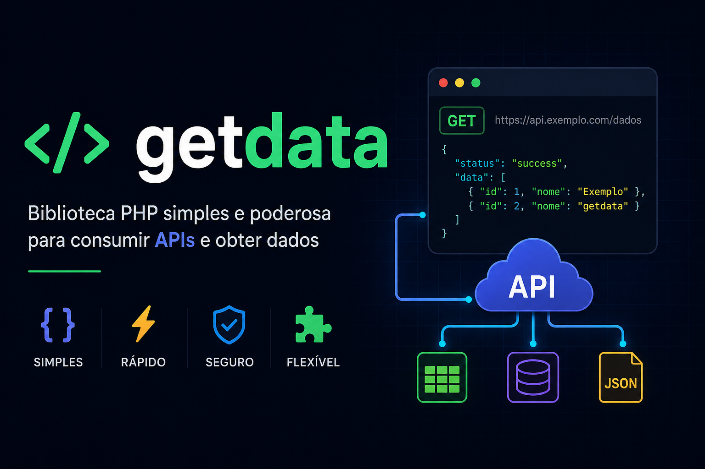

Building scalable APIs with clean architecture and performance focus
Backend Software Engineer focused on Laravel and high-performance API systems. I design and build maintainable architectures using clean code principles, with strong attention to scalability, performance, and long-term maintainability.
My work is centered on decoupled systems, queue-based processing, and database optimization, using tools like MySQL, Redis, Docker, and Laravel Horizon in production environments.
Currently focused on building production-grade backend systems and performance-oriented APIs.

A backend engineering project built with Laravel, focused on performance, scalability, and real-world architectural decisions commonly found in production-grade systems.

A deep dive into high-performance architecture using Reflection and Interfaces to build highly decoupled and scalable systems.

A local task management tool built with Laravel and React to support community work in recording and analyzing criminal incidents and accidents. It features user authentication (Laravel Sanctum), data storage in MySQL, map-based zone control with React-Leaflet, PDF report generation (Laravel DomPDF), and image handling with Intervention Image.

A lightweight local CRUD system, built entirely with React and an Express-based data layer. It requires no user authentication, making it ideal for personal use or local collaborative environments.
A task management system built with Python (Flask) and Node.js, featuring WhatsApp integration via whatsapp-web.js and a Firefox extension for enhanced productivity workflows.